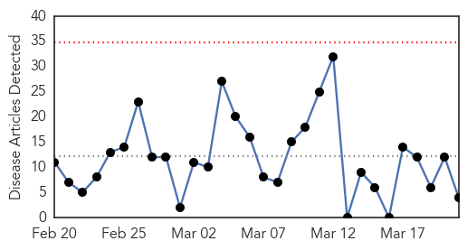
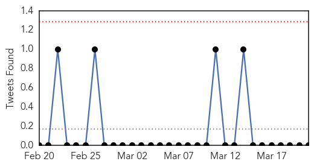

Influenza
30-Day Web Trend
0 alerts, 0 warnings

30-Day Twitter Trend
3 alerts, 0 warnings

Article Locations

Article Confidences

Top Articles:
- 0.751
- March 20, 2015 Archives
- 0.751
- March 20, 2015 Archives
- 0.751
- March 20, 2015 Archives
- 0.576
- Conscious Evolution TV
Top Tweets:
-
No tweets found for Mar 21, 2015
Mold/Fungal
30-Day Web Trend
1 alerts, 0 warnings
30-Day Twitter Trend
1 alerts, 0 warnings

Article Locations
Article Confidences

Top Articles:
Top Tweets:
-
No tweets found for Mar 21, 2015